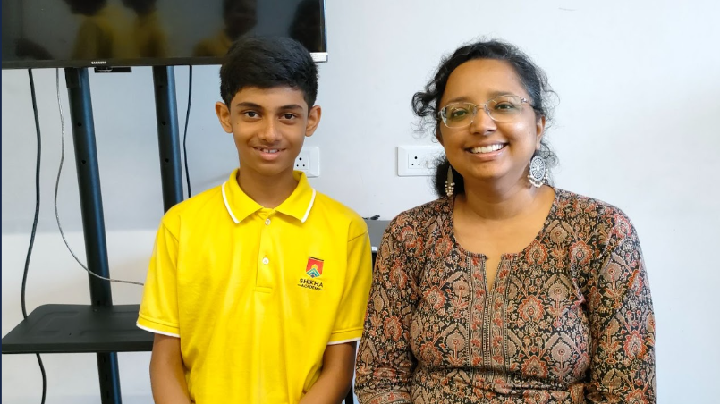
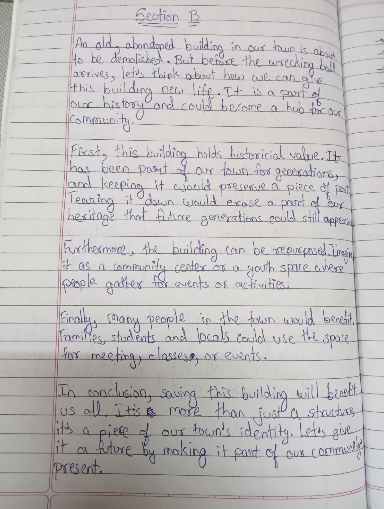
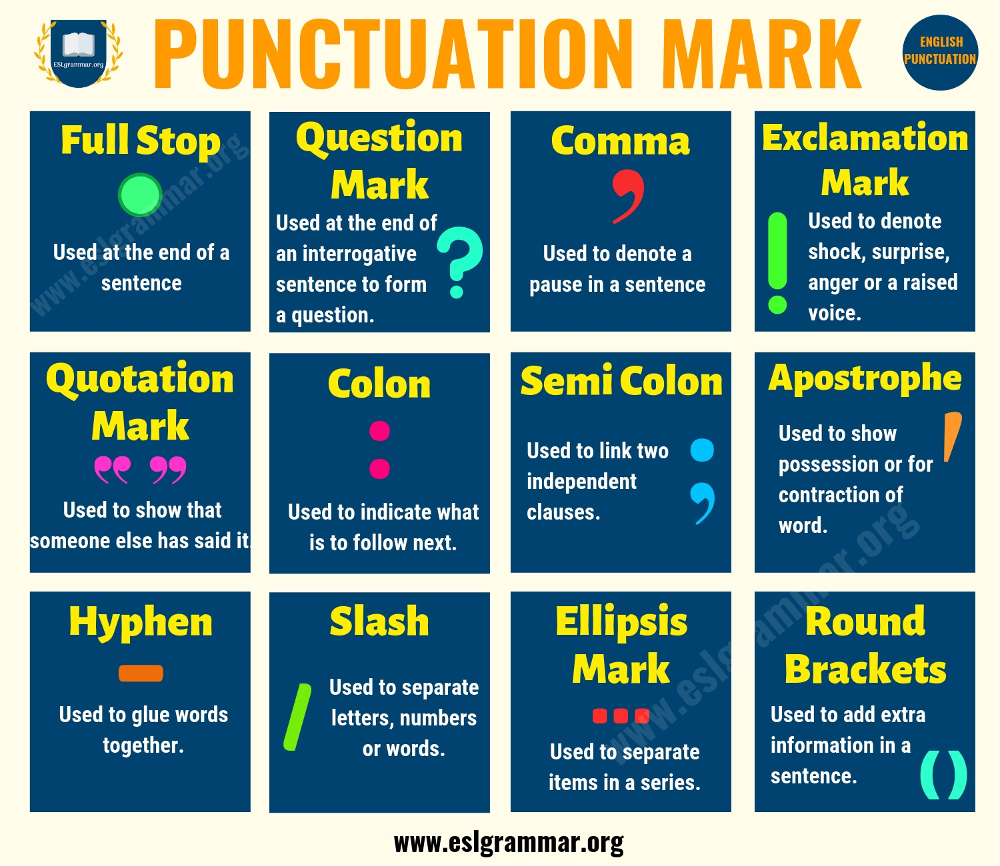
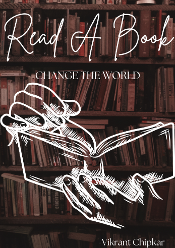

Ms. Sayoni Dutta is a great teacher who makes learning easy and fun. She explains things clearly, using simple examples and funny jokes to keep the class entertained. Her lessons are interesting, and students feel comfortable asking her questions. Everyone enjoys learning with her because she makes even hard topics easy to understand.
This graphic novel is about a journey through a strange, hidden world where shadows seem alive. The characters feel lost, searching for something more, and one of them is led to a secret place that could change everything. It's a mix of mystery, adventure, and deep thoughts about life, with cool visuals and dialogues that make you think.
Click here to access Dark Paris Novel.
In this task, I explored why it’s important to save an old, empty building in our town.
I imagined how much history it holds and how it’s been silently witnessing everything for years.
I thought about how cool it would be if we could turn it into something useful for everyone,
like a local museum, a space for artists to work, or even a place for community events.
By thinking about the future of this building,
I learned how giving new life to old spaces can bring people together and create new opportunities for cultural and social activities.
It also made me realize how important it is to balance preserving history while updating spaces to meet modern needs.
The task took me about 45 minutes, and I revised it once after thinking of different ways to use the building.
If I were to do this again, I’d definitely look into how other towns have repurposed similar buildings
and see what benefits they gained in the long run. That would help me get even more creative ideas!
In this task, I created an argument for and against the examinations with reference to its effectiveness and fareness in assessing students.
I then wrote the above essay in 20 minutes and the pros and cons of using exams as a measurement tool.
My argument rest based on the fact that exams will always be a means of measuring the achievements of students as it has proved to be a way of assessing student’s knowledge for a long time.
In this essay, I sought to explain how Examination can encourage students, manage time and facilitate the relational evaluation of the performance of the students.
They assist in the accumulation of important skills including; cramming, analytical work, and working under pressure.
Besides this, exams provide teachers and other institutions of learning with clear indication of the extent of mastery in learners.
But, I equally emphasised the argument against such thinking by considering the fairness of exams.
Exam stress and anxiety leads to poor performance, therefore, exams provide an untrue picture of a student’s abilities, I said.
In addition to this, I stressed that examinations reward memorizers and good performers, which often does not mean the best performer or the most creative student.
Another problem is that it is possible to receive different amounts of tutors or study materials that leads to disparities between preparation and results of the exam.
Accordingly, this essay suggested that student assessments should be done in a healthier and fairer manner.
As necessary as tests are in school, they should not be the only means of testing student’s knowledge.
For this reason, I suggested the approach that would allow using other forms of assessment such as projects, presentations, and class participation as an additional check on the student’s accomplishment.
Thus, it will be possible to increase objectivity of the assessment and pay more attention to the students’ individual properties.
It took me two hours to write this speech and I have had two revised copies.
First, I planned the major things, such as definition of GDP, issues, and prospects.
Finally, I extended it to include basic and inspirational phrases, constantly saying one more thing, “we are moving forward,” as in a political address.
The objective was to write simple speech like a politician, but at the same time also to inspire every reader.
I also raised issues such as inflation and development in the rural area to express real issues and how it has designing.
I completed the speech individually, but I found facts regarding GDP and some issues India is currently experiencing, making the speech more realistic and assured.
I also got the idea that the speeches should inspire people and desire them to take up the challenges with the help of others.
Writing this way I was able to learn on how politicians use words in a try to touch people’s hearts and maintain their optimism.
I figured out that I can always break down ideas and concepts into easy way.
Next time, I will try to bring even more emotional element into the work, or I will try to provide some examples to make the speech even better.
I learned to concentrate on solutions and not to stress on the problem, and I guess this also made me more positive.
(This is the speech because I was unable to upload speech audio. In docs I have kept both 1st and 2nd Draft.)

I came across this infographic on punctuation marks while studying for my exam, and it was very helpful. It explained the use of punctuation marks like full stops, commas, question marks, and more in a simple and clear way. I spent about 15 minutes going through it to understand each symbol and how to use it. Since I didn’t make this infographic, I didn’t create any drafts or follow many steps. I just read it and applied what I learned in my answers. It made me realize how important punctuation is in writing. Next time I’d try to make my own version to understand it even better.
In the month of January we are reading books in library for a growth in vocabulary and sentence structure.
Also except reading book in the library, I am also reading an Ebook at home named "The Adventures of Tom Sawyer" by Mark Twain.
It is a fun and exciting story about a boy named Tom Sawyer who is always getting into trouble.
Tom is a clever and mischievous boy who doesn’t like boring things like school.
Instead, he spends his time having fun adventures.
In the story, Tom skips school, tricks his friends into doing his work, and goes treasure hunting with his best friend, Huck Finn.
Along the way, he discovers a mysterious crime and has to figure out what to do about it.
The book is full of funny moments, daring adventures, and clever plans that make Tom a character you can’t forget.
It’s a great book for anyone who enjoys stories about fun, friendship, and thrilling adventures.
You can even read it for free online.
In February, I wrote a poem about the most memorable day of my life. It was a special experience because I got to express my emotions and thoughts through poetry.
I completed it in 10 minutes without making drafts. First, I thought about my most unforgettable day and why it was important to me.
Then, I chose descriptive words and rhymes to make the poem meaningful. I focused on expressing my feelings clearly and making the lines flow smoothly.
This activity helped me improve my creativity and writing skills. I worked alone but later shared my poem with classmates, who gave me positive feedback.
I researched different poetic styles to make my writing better. This experience made me realize that I enjoy writing poems and expressing my thoughts in creative ways.
It also made me more confident in my writing. Next time, I will try using new poetic techniques and work on making my poem even more emotional and engaging.
I took about an hour to complete this story, including planning, drafting, and finalizing it.
I made around three drafts before I was satisfied with the final version.
First, I brainstormed the storyline and ideas, then wrote the initial draft, keeping it simple and easy to understand.
After that, I revised it to make the language more engaging. Finally, I polished the draft by checking grammar and making sure the story flowed smoothly.
I worked on this story independently, but I did take some inspiration from fantasy stories and movies.
I didn't do much research, but I focused on understanding how to build suspense and make the fight scene exciting.
Through this process, I learned how to balance simplicity with excitement in storytelling.
I realized that I could write creatively if I planned well and stayed focused.
This experience helped me grow as a writer by teaching me how to make a story more captivating.
Next time, I would focus more on adding descriptive language and making the characters feel more real.

Creating the “Read A Book, Change the World” poster took me about 1-2 hours.
I made 2–3 drafts before finalizing the one you see.
At first, I explored ideas like a glowing book, children reading, and hands holding books.
I finally chose a powerful background of a library and added a hand-drawn sketch of hands reading a book to make it meaningful and eye-catching.
The steps I followed were: